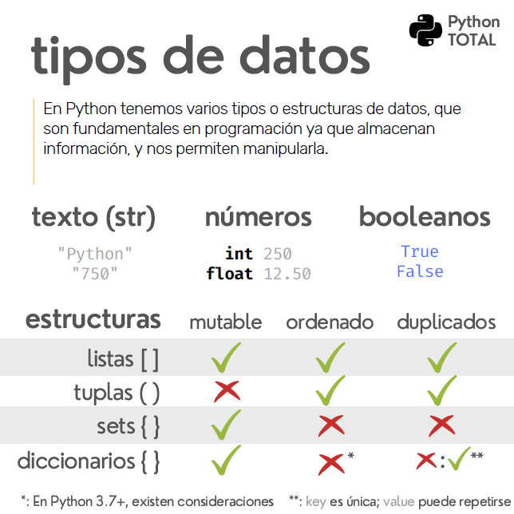
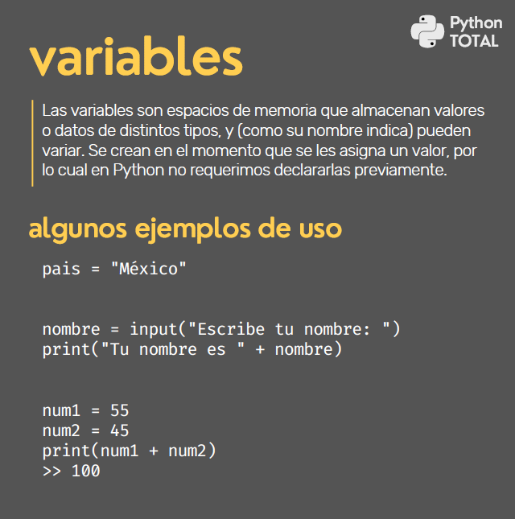
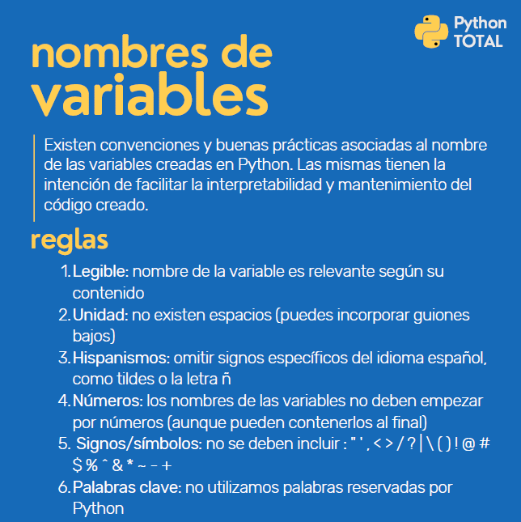
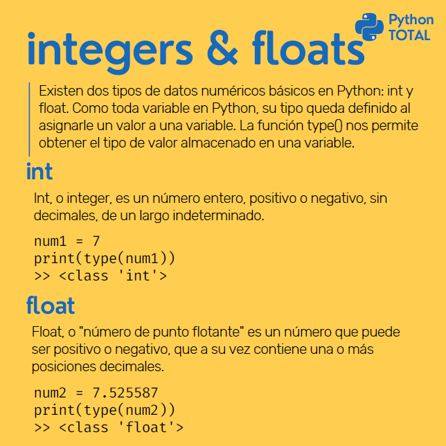
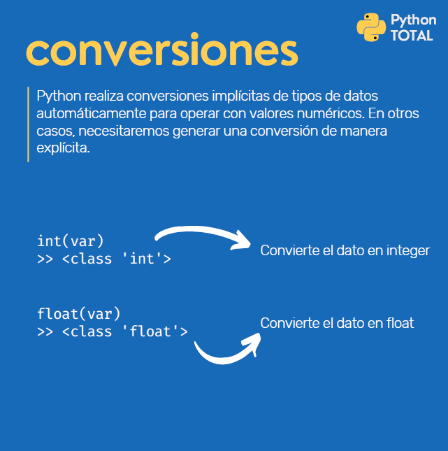
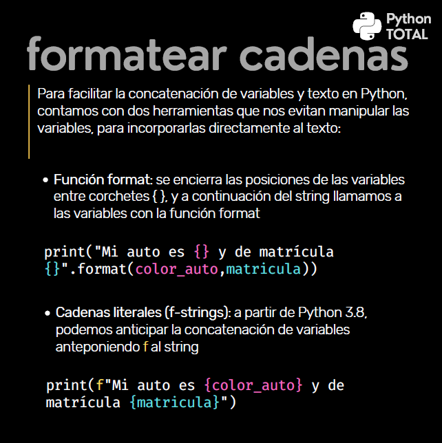
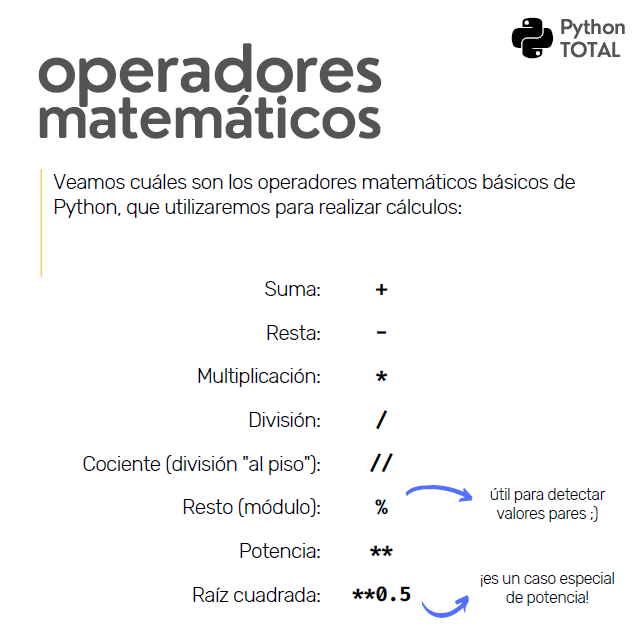
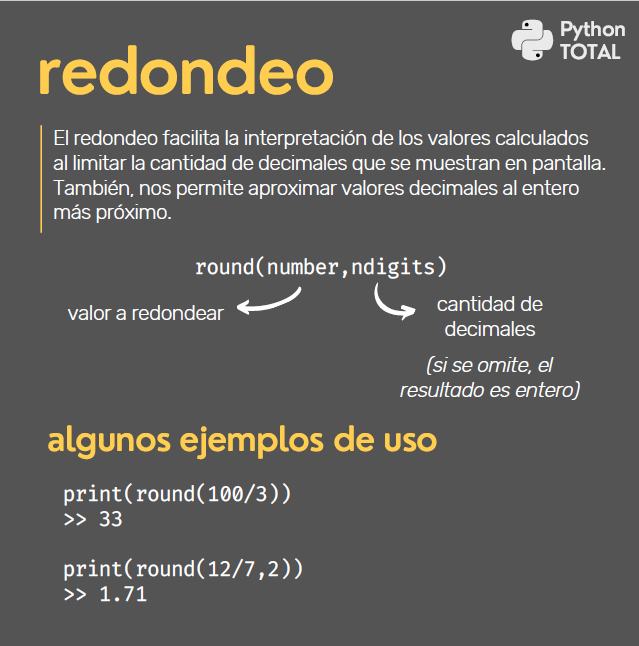

Python - Notas
1. Tipos de Datos
String -> "Hola" ->string(str)
Nùmero -> 12 ->integer(int)
-> 1.25 ->floating(float)
booleanos(bool) ->Valores lògicos con dos unicos valores, True, False.
listas(lst) -> ["Juan", "pablo"] ->Data ordenada, pueden contener objetos de todos tipos y diferentes, estan ordenadas (indice)
-> Mutable Ordenado Duplicados
->valor
diccionadrios (dic) -> {'color':'rojo', 'arte':'cine'} ->Pares de palabras ordenados Sin in un indice especifico.
-> Clave
-> Mutable NOOrdenado NODuplicados
tuples (tup) ->('lun','mar') -> Orden inmutable que diferencia a las listas
-> NOMutable Ordenado Duplicados
sets(set) ->Conjunto ordenado de elementos ùnicos.
-> Mutable NOOrdenado NODuplicados

2. Variables
Como cajas, para almacenar algo que puede variar.
Espacio de memoria reservado con un nombre especìfico.
--------------------------------------------------------
nombre = "Juan"
print(nombre)
nombre = "Laura" ->Reasignamos la variable
print(nombre)
--------------------------------------------------------
nombre = input("Dime tu nombre ")
print("Tu nombre es " + nombre)
--------------------------------------------------------
nombre = "hola "
nombre2 = "Python"
frase = nombre + nombre2
print(frase)
--------------------------------------------------------
edad = 30
edad2 = 50
frase = edad + edad2
print(frase) -> 80

Práctica
-------------------------------------------------------
Práctica con Variables 1 Declara dos variables, llamadas nombre y edad. Asigna a la variable nombre el valor "Tony Soprano", y a la edad, el valor 51.
nombre = "Tony Soprano "
edad = str(51)
frase = nombre + edad
print(frase)
-------------------------------------------------------
Práctica con Variables 2 Crea tres variables: nombre apellido nombrecompleto A nombre, asígnale el valor "Julia", y en apellido, asigna el valor "Roberts". Finalmente, construye la variable nombrecompleto concatenando las variables (recuerda sumar un espacio intermedio).
nombre = "Julia "
apellido = "Roberts "
nombreCompleto = nombre + apellido
print(nombreCompleto)
-------------------------------------------------------
Práctica con Variables 3
Declara la variable curso, asígnale el valor "Python", y muestra en pantalla la frase:
Estás tomando un curso de curso
Para ello deberás concatenar la primera parte de la frase con el valor que asumirá la variable. Recuerda agregar un espacio antes de concatenar la variable al resto del texto.
curso = "Python"
print("Estas tomando un curso de " + curso)
-------------------------------------------------------
3. Los nombres de las Variables
Regla 1 -> Que sea Legible ->Ejemplo: nombre_perro
Regla 2 -> Unidad ->Ejemplo: nombre_de_estudiante -> Minusculas y guiones bajos.
Regla 3 -> Hispanismos ->Ejemplo: Anios
Regla 4 -> Numeros ->Ejemplo: mes_8 ->No colocarlo al comienzo
Regla 5 -> Signos -> No colocarlos
Regla 6 -> No usar palabras claves reservadas como input_1, print, etc.
--------------------------------------------------------

4. Integers y Floats
Integeres -> Enteros (Edad, poblacion, dias_restantes, n_cliente)
Floats -> Decimales (grados, valor, altura)
--------------------------------------------------------
mi_numero = 1 + 3
print(mi_numero)
print(type(mi_numero)) -> 4
->
--------------------------------------------------------
mi_numero = 5.8
print(mi_numero)
print(type(mi_numero)) -> 5.8
->
--------------------------------------------------------
mi_numero = 5.8
mi_numero = mi_numero + mi_numero
print(mi_numero)
print(type(mi_numero)) -> 11.6
->
--------------------------------------------------------
mi_numero = 5 + 5.8
print(mi_numero)
print(type(mi_numero)) -> 10.8
->
--------------------------------------------------------
edad = input("Dime tu edad: ") -> Dime tu edad: 29
print("Tu edad es " + edad) -> Tu edad es 29
nueva_Edad = 1 + edad
print("Vas a cumplir " + nueva_Edad) -> No podemos sumar un entero con la edad que es un string
*Todo lo que usuario ingrese a travès de un input el sistema lo toma como un String
--------------------------------------------------------
edad = input("Dime tu edad: ")
print(edad + edad) -> 3030 Concatena el string del input.
->Para lograr la suma debemos convertir los tipos de valores.

Práctica
--------------------------------------------------------
Práctica con Integers
Declara una variable numérica llamada num_entero que contenga un valor de tipo integer de tu elección.
Imprime el tipo de dato de dicha variable.
num_entero = 50
print(type(num_entero)) ->
--------------------------------------------------------
Práctica con Floats
Declara una variable numérica llamada num_decimal que contenga un valor de tipo float de tu elección.
Imprime el tipo de dato de dicha variable.
num_decimal = 50.4
print(type(num_decimal))
--------------------------------------------------------
Práctica con Tipos de Datos Numéricos
¿De qué tipo es el resultado de la suma de 7.5 + 2.5? Genera el código para verificarlo.
Para ello, crea dos variables:
num1 = 7.5
num2 = 2.5
A continuación, muestra en pantalla el tipo de dato que resulta de la suma de ambos números.
Realiza el mismo ejercicio en PyCharm para ver el resultado. ¿Coindice con lo que esperabas?
num1 = 7.5
num2 = 2.5
print(type(num1 + num2)) ->
--------------------------------------------------------
5. Conversiones entre tipos de Datos.
Dos tipos implicita y explicita
Implicita: Python convierte el tipo de datos en otro tipo de datos AUTOMATICAMENTE. En este proceso, el usuario no debe hacer nada.
Explicita: Python necesita que el usuario haga algo para convertir un tipo de dato en otro.
->Nosotros damos la orden.
Ejemplo:
mi_valor = 1
otro_valor = string(mi_valor)
print(otro_valor)
--------------------------------------------------------
num1 = 20
num2 = 30.5
num1 = num1 + num2
print(type(num1)) -> Conversiòn implicita.
print(type(num2)) ->
--------------------------------------------------------
num1 = 5.8
print(num1) ->5.8
print(type(num1)) ->
num2 = int(num1)
print(num2) ->5
print(type(num2)) ->
--------------------------------------------------------
edad = input ("Dime tu edad: ")
print(type(edad)) ->str
edad = int(edad) ->Conversiòn explicita
print(type(edad)) ->int
nueva_edad = 1 + edad
print(nueva_edad)

Práctica
--------------------------------------------------------
Práctica con Conversiones 1
Convierte el valor de num1 en un int e imprime el tipo de dato que resulta:
num1 = 7.5
num1 = 7.5
nuevo_num = int(num1)
print(type(nuevo_num)) ->
--------------------------------------------------------
Práctica con Conversiones 2
Convierte el valor de num2 en un float e imprime el tipo de dato que resulta:
num2 = 10
num2 = 10
nuevo_num = float(num2)
print(type(nuevo_num)) ->
--------------------------------------------------------
Práctica con Conversiones 3
Suma los valores de num1 y num2.
No modifiques el valor de las variables ya declaradas, sino aplica las conversiones necesarias dentro de la función print().
num1 = "7.5"
num2 = "10"
print(num1 + num2)
num1 = "7.5"
num2 = "10"
print(float(num1) + float(num2)) ->17.5
--------------------------------------------------------
6. Formatear Cadenas
1- Funciòn Format, entre (), separado por comas.
Desventaja, poco legible.
print("Mi auto es {} y de matrìcula {}" .format(color_auto, matricula))
2- Cadenas Literales, màs legible.
print(f"Mi atuo es {color_auto} y de matricula {matricula}")
Dos maneras que son viables.
--------------------------------------------------------
x = 10
y = 5
print("Mis numeros son " + str(x) + " y " + str(y))
->Poco practico
--------------------------------------------------------
x = 10
y = 5
print("Mis numeros son {} y {}".format(x,y)) ->Mis numeros son 10 y 5
-> Màs practico pero menos legible.
x = 10
y = 5
print("La suma de {} y {} es igual a {}".format(y,x,y+x)) ->La suma de 5 y 10 es igual a 15
->Aplicamos la suma dentro
x = 10
y = 5
z = x + y
print("La suma de {} y {} es igual a {}".format(y,x,z)) ->La suma de 5 y 10 es igual a 15
--------------------------------------------------------
x = 10
y = 5
print("Mis numeros son {} y {}".format(x,y)) ->Mis numeros son 10 y 5
--------------------------------------------------------
color = "rojo"
matricula = 352332
print(f"El auto es {color} y su matricula es {matricula}")

Práctica
--------------------------------------------------------
Práctica Formatear Cadenas 1
Necesitamos imprimir el nombre y número de asociado dentro de la siguiente frase:
"Estimado/a (nombre_asociado), su número de asociado es: (numero_asociado)"
Recuerda que la precisión de tu respuesta (espacios, ortografía y puntuación), es muy importante para llegar al resultado correcto.
nombre_asociado = "Jesse Pinkman"
numero_asociado = 399058
nombre_asociado = "Jesse Pinkman"
numero_asociado = 399058
print
(f"Estimado/a {nombre_asociado}, su número de asociado es: {numero_asociado}")
O bien, de la otra manera
print("Estimado/a {}, su número de asociado es: {}".format(nombre_asociado, numero_asociado))
--------------------------------------------------------
Práctica Formatear Cadenas 2
Muestra al usuario la cantidad de puntos acumulados dentro de la siguiente frase:
"Has ganado (puntos_nuevos) puntos! En total, acumulas (puntos_totales) puntos"
Recuerda que la precisión de tu respuesta (espacios, ortografía y puntuación), es muy importante para llegar al resultado correcto.
puntos_nuevos = 350
puntos_totales = 1225
print(f"Has ganado {puntos_nuevos} puntos! En total, acumulas {puntos_totales} puntos")
o
print("Has ganado {} puntos! En total, acumulas {} puntos".format(puntos_nuevos, puntos_totales))
--------------------------------------------------------
Práctica Formatear Cadenas 3
Muestra al usuario la cantidad de puntos acumulados dentro de la siguiente frase:
"Has ganado (puntos_nuevos) puntos! En total, acumulas (puntos_totales) puntos"
En esta ocasión, la cantidad de puntos acumulados (totales) será igual a los puntos_anteriores más los puntos_nuevos.
Recuerda que la precisión de tu respuesta (espacios, ortografía y puntuación), es muy importante para llegar al resultado correcto.
puntos_anteriores = 875
puntos_nuevos = 350
puntos_anteriores = 875
puntos_nuevos = 350
puntos_totales = puntos_nuevos + puntos_anteriores
print(f"Has ganado {puntos_nuevos} puntos! En total, acumulas {puntos_totales} puntos")
o
puntos_anteriores = 875
puntos_nuevos = 350
puntos_totales = puntos_nuevos + puntos_anteriores
print("Has ganado {} puntos! En total, acumulas {} puntos".format(puntos_nuevos, puntos_totales))
7. Operadores Matemàticos.
x = 6
y = 2
print(f"{x} mas {y} es igual a {x+y}")
print(f"{x} menos {y} es igual a {x-y}")
print(f"{x} por {y} es igual a {x*y}")
print(f"{x} dividido {y} es igual a {x/y}")
--------------------------------------------------------
->Division al piso, pone el numero entero, 7/ 2 = 3,5
x = 6 7/2 = 3
y = 2
z = 7
print(f"{z} dividido al piso {y} es igual a {z//y}") -> 7 dividido al piso de 2 es igual a 3
--------------------------------------------------------
El modulo es util en programacion para descubrir numeros pares o impares.
Si el modulo es 0 el numero serà par, de lo contrario impar
6/3 -> 2 = Modulo es 0
7/2 -> 3 = MOdulo es 1
x = 6
y = 2
z = 7
print(f"{z} dividido al piso {y} es igual a {z//y}")
print(f"{z} modulo de {y} es igual {z%y}") -> 7 modulo de 2 es igual a 1
--------------------------------------------------------
Potencia
print(f"{x} elevado a la {y} es igual a {x**y}") -> 6 elevado a la 2 es igual a 36
--------------------------------------------------------
print(f"{x} elevado a la {3} es igual a {x**3}")
--------------------------------------------------------
Raiz cuadrada
print(f"La Raiz cuadrada de {x} es {x**0.5}") -> Para obtener la raiz cuadrada **0.5
-> Es un caso especial de potencia

Práctica
--------------------------------------------------------
Práctica Operadores Matemáticos 1
Muestra en pantalla el cociente (división al piso) de los siguientes dos números: 874 dividido entre 27
x = 874
y = 27
print(f"El cociente(division al piso) de 874 en 27 es {x//y}")
--------------------------------------------------------
Práctica Operadores Matemáticos 2
Muestra en pantalla el módulo (es decir, el resto) de la división entre 456 y 33
x = 455
y = 33
print(f"El modulo(es decir, el resto) de 455 y 33 es {x%y}")
--------------------------------------------------------
Práctica Operadores Mateméticos 3
Calcula y muestra en pantalla la raíz cuadrada de 783
x = 783
print(f"La raìz cuadrada de 783 es {x**0.5}")
--------------------------------------------------------
8. Redondeo
round(redondeo) -> Permite reducir los decimales que deseemos.
round(param1, param2)
Puede redondear hacia arriba o hacia abajo
round(5.3) -> 5
round(5.8) -> 6
round(5.5) -> 6 -> En el medio toma hacia arriba.
--------------------------------------------------------
print(round(90/7)) -> 13
--------------------------------------------------------
->Podemos hacer el redondeo en la misma variable.
resultado = round(90/7)
print(resultado)
--------------------------------------------------------
resultado = 90/7
redondeo = round(resultado)
print(redondeo)
--------------------------------------------------------
-> Segundo parametro que indica los decimales, que veremos.
valor = round(95.666666666666, 2)
print(valor) ->95.67
--------------------------------------------------------
valor = round(95.666666)
print(valor)
print(type(valor)) -> int,
valor = 95.666666
print(round(valor))
print(type(valor)) -> float
--------------------------------------------------------

Práctica
--------------------------------------------------------
Práctica Redondeo 1
Redondea el resultado de la división 10/3 a un número con 2 decimales, y muestra en pantalla el valor redondeado.
num = round(10/3, 2)
print(num)
--------------------------------------------------------
Práctica Redondeo 2
Redondea el resultado de 10.676767 al entero más próximo, y muestra en pantalla el resultado.
valor = 10.676767
-----------------
valor = round(10.676767)
print(valor)
--------------------------------------------------------
Práctica Redondeo 3
Calcula la raíz cuadrada de 5, y muestra en pantalla el resultado redondeado con 4 posiciones decimales.
raìz = round(5**0.5, 4)
print(raiz) -> 2.2361
--------------------------------------------------------
Proyecto del Dìa 2
nombre = input("Hola, ingresa tu nombre de usuario:")
ventas = float(input("Ingresa la cantidad vendida:"))
porcentaje = round((ventas*13)/100, 2)
print(f"Felicitaciones {nombre}, tu comisión serà de ${porcentaje}")
--------------------------------------------------------
Solucion del Teacher.
nombre = input("Por favor, dime tu nombre: ")
ventas = int(input("Diga sus ventas totales del mes: "))
comision = round(ventas * 13 / 100, 2)
print(f"Hola {nombre}, tus comisiones de este mes son de ${comision}")